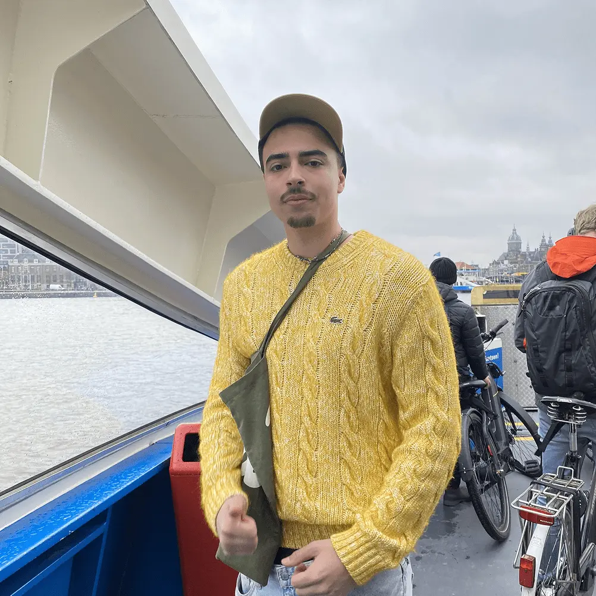

À l'école, comme chez soi
Mise en situation
Dans le cadre de notre projet Rethinking UX (option Design Web & Transmédia à la Haute-École Albert Jacquard), nous avons dû réfléchir, par groupe, à une manière de réaménager une salle à disposition des étudiants (A083–A084). À la base, cette pièce appartenait à l’école secondaire Henri Maus, mais elle a été laissée à l’abandon. Nos professeurs, Mme Loroy et M. Selamet nous ont donc donné des directives pour ce projet : Découvrir la salle, récolter les attentes et besoins des étudiants, rédiger un Case Study et présenter notre projet au reste de la classe/aux professeurs. Suite à cela, chaque élève a dû réaliser un site internet (au design unique) afin de présenter le projet, sur base du contenu de ce Case Study.
Premier contact
Nous avons, à l’aide d’un sondage, demandé aux étudiants leurs habitudes pendant leurs heures creuses. La majorité des étudiants, ne pouvant pas travailler à l’école, en profitent pour se détendre là où ils peuvent.
Que faites-vous pendant les heures creuses ?
Nous avons également relevé que les étudiants sont partagés entre un esapce de travail et un endroit de détente pour les heures creuses, tandis que d'autres veulent réunir les deux.
Quelle utilité souhaitez-vous pour la salle ?
Nous devons ajouter à ça que la majorité des outils disponibles dans l'école sont numériques, pourtant les étudiants soulignent un grand manque de prises accessibles pour brancher et recharger leurs appareils. Enfin, la plupart des ordinateurs ou autres appareils à disposition se trouvent dans les classes où les professeurs donnent cours, par conséquent, l'accès libre au matériel est impossible pendant les heures creuses.
Qu'est-ce qui vous dérange dans les autres salles ?
L'aménagement des salles et leur ambiance sont également soulignés. En effet, les élèves trouvent que les autres salles manquent de décoration, bien que celle-ci soit importante, et qu'elles ne permettent pas de s'installer confortablement, sachant qu'il n'y en a déjà pas beaucoup.
La décoration est-elle importante ?
Conclusion de l'étude
Grâce au sondage, nous avons pu déterminer que les étudiants ont besoin d'un espace polyvalent, qui puisse convenir à la fois pour le travail et détente, en accordant une attention particulière à sa décoration et son amménagement.
Problèmes
Tout d'abord, le A084 sert actuellement au Conseil Étudiants pour la livraison des Guido, donc il faut trouver un arrangement avec eux.
Lors d'une visite du A083, nous avons constaté un manque de prises, rendant l'installation d'ordinateurs impossible sans refaire l'installation électrique du local.
Nous avons également remarqué que la pièce résonne. Pour y remédier, nous avons pensé à mettre des mousses acoustiques sur les murs, afin d'insonoriser correctement le local.
La pièce est séparée par deux portes actuellement condamnée. Pour faciliter l'accès aux deux salles, il pourrait être intéressant de rétablir l'ouverture de ces portes.
Un autre problème non-négligeable : toute idée doit être validée par la direction, notamment pour prévoir un budget et en vérifier la faisabilité.
Premières idées
Après avoir analysé la salle et ce qui se trouvait à notre disposition, nous avons réfléchi à ce que nous pourrions apporter de neuf à cette salle en fonction des demandes des étudiants.
Plusieurs points revenaient de manière récurrente : le manque de décoration et de confort au sein de l’école. D’après les réponses obtenues suite à notre formulaire, il n’y a en effet, en dehors de la cafétéria (qui n’est pas vraiment un endroit “calme”), pratiquement pas de salle aménagée, loin du bruit extérieur. Que ce soit pour se détendre, ou pour travailler, cette salle était donc parfaite pour cela, car elle se situe dans une annexe du bâtiment principal.
Deux points ont alors retenu notre attention. Premièrement, la décoration des murs. En effet, les murs de la salle étant simplement peints en blanc, cela donne une impression de vide, qui ne donne pas envie d’y rester. Notre idée principale est de décorer la pièce avec des affiches/travaux d’étudiants qu’ils pourraient accrocher aux murs.
Deuxièmement, l’idée d’aménager un coin tables/fauteuils en spirale pour qu’il se différencie des tables d’école plus classiques. Cet étalage serait collé contre l’un des murs de la salle, prenant toute sa largeur. Cependant, étant donné le budget limité, c’est trop compliqué à réaliser.
Nous avons donc retenu l’idée principale des affiches sur le mur, bien plus abordable que les fauteuils, en gardant quand même l’idée en tête au cas où une solution serait trouvée.
Mise en commun
Une fois que chaque groupe a fini ses recherches de problématiques et d’idées en découlant, nous avons ensuite mis en commun toutes nos idées afin de se répartir les tâches et assurer la cohérence du projet global. Chaque groupe a donc une tâche précise à réaliser : nous nous occuperons de la décoration murale, certains de la porte, d’autres de l’agencement des meubles, etc.
Étude approfondie
Suite à cette mise en commun, nous nous sommes penché sur notre idée d’affiches. Nous avons décidé de partir sur une bâche à accrocher sur l’un des murs de la pièce grâce à des ficelles et des anneaux ancrés dans le mur. En premier lieu, nous voulions y insérer des travaux d’étudiants d’options différentes, un peu dans le même style que les posters/affiches/bâches des journées portes ouvertes de l’école. Le problème est qu’il faudrait l’autorisation de chaque étudiant pour pouvoir utiliser leurs travaux, ou bien demander directement aux professeurs de faire une sélection, ce qui est compliqué à cause des délais.
Une autre solution, serait de remplacer la bâche par des néons, des leds, des plantes aux murs ou d’autres éléments moins présents dans les différents bâtiments de l’école afin de combler un peu cette impression de blanc/de vide/de connu. On utiliserait cette option si le timing devenait trop juste pour obtenir les travaux des élèves.
Dans ce but, pour ajouter un peu de variation et s’éloigner du fait d’avoir des bâches partout dans l’école, nous avons eu pour idée de mettre des mousses acoustiques sur certains murs de la salle. En effet, la hauteur sous plafond étant très grande, la pièce résonne beaucoup. L’installation de ces mousses permettrait de réduire considérablement les échos de la salle tout en contribuant à sa décoration.
Équipe
-
Lucas L.
-
Sébastien D.
-

Andrea V.
-
Gabriel M.
-
Yassine A.
-
Arthur H.